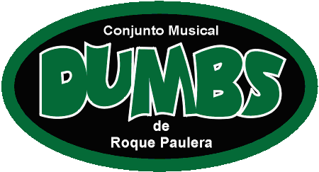

SHOWS | MÚSICAS | NÓS | DUMBIOGRAFIA | FITOGRAFIA | VALEU
https://aurelio.net/dumbs
Esta é a página oficial do
No ar desde 08 de Abril de 1997! |
![[bandeira do Brasil]](imagens/brasil.gif)
|
A banda DUMBS nasceu em Curitiba em 1995 e fez seu último show em 2001,
totalizando seis anos de existência ativa (nem tanto :).
Essa página é o registro de nossas músicas, shows, história.
Aproveite a viagem!
SHOWS | MÚSICAS | NÓS | DUMBIOGRAFIA | FITOGRAFIA | VALEU